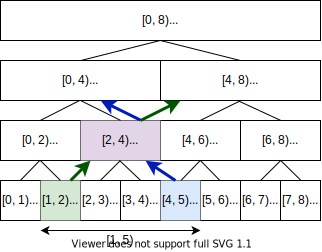

3.2.2. セグメント木¶
Code: segment_tree.py
Test: test_segment_tree.py
セグメント木とは¶
区間を扱うデータ構造の1つ。
区間積の取得 (区間取得) と1点更新を \(\mathcal{O}(\log{n})\) で行うことができる。
区間の表現¶
セグメント木は、完全二分木の節点で区間を表現する。
任意の区間は、複数の節点を使って表すことができる。例えば区間 \([1, 5)\) は図中の赤節点で表される。
それぞれの節点の値には、問題設定に応じて区間に対する問い合わせ結果を持たせる。
例えば「区間最大値」を求めるセグメント木であれば、次の図のようにそれぞれの節点に対応する区間最大値を持たせる。
セグメント木が扱える演算¶
Monoid (Wikipedia)
モノイドの性質を満たす演算を扱うことができる。
具体的には、結合律を満たし、かつ単位元をもつ演算を扱うことができる。
演算 |
対応するPythonの関数 |
単位元 |
|---|---|---|
和 |
0 |
|
積 |
1 |
|
最小値 |
+INF |
|
最大値 |
-INF |
|
AND |
1 |
|
OR |
0 |
|
XOR |
0 |
|
GCD |
0 |
|
LCM |
1 |
区間取得 (トップダウン)¶
区間取得では、セグメント木を根から葉へ再帰的に探索する。
次の図は、区間最大値を持つセグメント木に対して、区間 \([1, 5)\) の最大値を求めるクエリを処理する流れを示している。

上の図において
黄色のノードは「ノードが表す区間の一部に、取得したい区間が含まれている」
緑色のノードは「ノードが表す区間の全部に、取得したい区間が含まれている」
ことを表す。
区間 \([1, 5)\) の最大値は、上の図の3つの緑色のノードから求まり、\(\max(-2, 6, 5) = 6\) と計算できる。

区間取得 (ボトムアップ)¶
区間取得は一点更新と同様に、セグメント木を葉から根に向かって辿ることでも実現できる。
区間 \([a, b)\) の区間積を求めるには、まず \([a, \infty)\) と \([-\infty, b)\) の区間積を考える。
これを求めるには自身の親ノード、または親の兄弟ノードを辿ることで実現できる。
区間 \([a, b)\) の区間積は、\([a, \infty)\) と \([-\infty, b)\) それぞれの軌跡が交差するところまでの区間積として求まる。
実装¶
計算量¶
前処理
操作
メソッド
計算量
数列 \(a\) の初期化
from_sequence(a)\(\mathcal{O}(n\log{n})\)
クエリ
操作
メソッド
計算量
区間積取得
prod(a, b)\(\mathcal{O}(\log{n})\)
1点更新
set(key)\(\mathcal{O}(\log{n})\)
コード¶
[1]:
from __future__ import annotations
from collections.abc import Callable, Sequence
class IntervalError(Exception):
def __init__(self):
self.message = "Interval [a, b) must be a < b."
class SegmentTree:
def __init__(
self, size: int, op: Callable[[int, int], int] = min, init_value: int = 10 ** 8
) -> None:
self.size = size
self.op = op
self.init_value = init_value
n = 2 ** ((size - 1).bit_length())
treesize = n * 2
st = [init_value] * treesize
self.st = st
self.offset = len(st) // 2
@classmethod
def from_sequence(
cls,
a: Sequence[int],
op: Callable[[int, int], int] = min,
init_value: int = 10 ** 8,
) -> SegmentTree:
st = cls(len(a), op=op, init_value=init_value)
for i, x in enumerate(a):
st.set(i, x)
return st
def set(self, key: int, value: int) -> None:
k = self.offset + key
self.st[k] = value
k >>= 1
while k > 0:
self.st[k] = self.op(self.st[k * 2], self.st[k * 2 + 1])
k >>= 1
def prod(self, a: int, b: int) -> int:
if a >= b:
raise IntervalError()
a += self.offset
b += self.offset - 1
s = self.init_value
while a < b:
if a & 1:
s = self.op(s, self.st[a])
a += 1
a >>= 1
if not b & 1:
s = self.op(s, self.st[b])
b -= 1
b >>= 1
if a == b:
s = self.op(s, self.st[a])
return s
使用例¶
コンストラクタの引数 op には演算を、 init_value には単位元をそれぞれ指定する。
[2]:
A = [3, -2, 1, 6, 5, 11, -7, -9]
st = SegmentTree.from_sequence(A, op=max, init_value=-10**8)
print(st.prod(1, 5))
st.set(3, 2)
print(st.prod(1, 5))
6
5